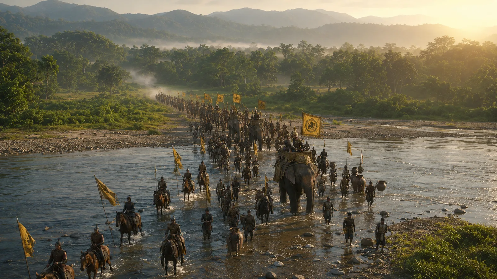

Sukaphaa Enters the Assam Valley
1228 · The coming of Sukaphaa

Formal arrival of Sukaphaa's royal entourage in the plains of Upper Assam along the Dihing river basin in 1228 CE, officially inaugurating the 600-year Ahom Dynasty.
Arrival at Namrup in December 1228. In the same year Sandhya took the throne of Kamarupa.
Sources
People: Chaolung Sukaphaa